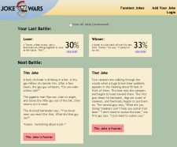
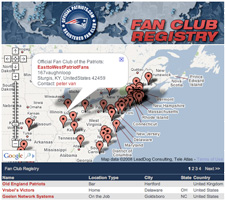
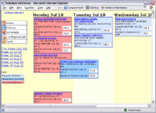
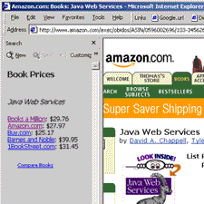
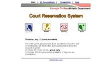
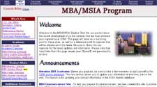
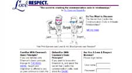

This is an overview of some of the sites I have created for school, for fun, and assorted extra-curricular projects. In some cases, clicking on the screenshot will bring you to that page, or to a description of how that page was created. Not all descriptions have been completed. Projects are listed in reverse chronological order.

- Group Members: Fil, Jonah
- Date: Conceived in Late 2005, Developed in Early 2008
- Description: Written with Ruby on Rails 2.0 and MySQL, allows people to battle two jokes together. Uses full RESTful-routing and REST-based techniques. Also developed a Facebook app with the facebooker plugin.
- Technologies: Ruby on Rails, MySQL

- Date: March 2008
- Description: This Google Maps mashup plots the Patriots Fan Clubs across the world, and allows you to zoom in, and search for them. It uses the Google Maps API to generate the map, and the Geocoding API to look up the latitude and longitude of new clubs when they are created.
- Technologies: ColdFusion 8, REST/XML
- Date: 2005
- Description: There are a lot of great bandwidth testers out there (DSLReports, Speakeasy, etc.) but no free/open source solutions I could find. The problem with a hosted bandwidth tester is that your results are subject to their bandwidth. By having one of my own I can drop it on any computer and test the connectivity between them. This project is no longer under development, but I was looking to build more functionality into it, including traceroute utilities (which are surprisingly hard to implement in Java because they require access to raw sockets) and possibly other monitoring/troubleshooting tools... VoIP, QoS, etc. This utility is implemented using a Java Applet with a Swing UI, and it tests uploads by making calls back to a Servlet. It can therefore be conveniently packaged up in a WAR file and dropped into Tomcat as a webapp.
- Technologies: Java, Swing, Applet

- Date: Current (2004-2005)
- Description: Developed a system for scheduling deliveries of motor oil. It uses a DHTML-based front end for manually laying out the schedule in a drag-and-drop fashion. Delivery schedules are projected and arranged based on delivery and consumption history.
- Technologies:It is JSP-based with a MySQL backend using the Spring framework.

- Group members: Jerry Yoo, Kriti Bhandari, Chris Ghazaryans
- Date: May 2001 / February 2003
- Description: This project was originally done as part of the Distributed Object Technologies course, implemented in both CORBA and RMI. I later rewrote it, and it is currently implemented as a web service running under Apache Axis. The concept is simple - there are plenty of price comparison sites, but in order to use them, you have to go visit them. In other words, you either have to do your shopping from their site, or shop at another site and then go to their site to find the product (shop twice). We wanted to create something whereby you can shop at your favorite site, then click a button and see prices at other stores. This application detects what product your looking at, then goes out to other retailers and finds their prices in real time (no database required).
- Technologies: Java, SOAP, Apache Axis

- Group members: Lydia Choy, Aaron Powers, David Stern-Gottfried, Ayaka Uchida
- Date: May 2001
- Description:Developed as part of the HCI project course, we built this site for the CMU Athletic Department. It allows students to reserve Racquetball, Squash, Tennis, and Spinning times.
- Technologies:It is written in JSP using Custom Tag Libraries and is backed with a MySQL database.
GSIA MBA/MSIA Front Page

- Date: March 2001
- Description:This is a revamped version of the old front page for the GSIA's MBA program. The site is used regularly by current students as a portal to different sources of academic information. In addition to development, I was also responsible for the design.

- Date: December 2000
- Group members: Gabe Chua, Tara Dwivedi, Lauren Holz, Bill Long, Eunjae Lim
- Description: This site was for our senior Information Systems project course. It is currently online at loveandrespect.com. Our team worked with the client, Dr. Emerson Eggerichs, to create an online presence for his business. We helped him formulate the ideas, architected the system, and implemented it completely.
- Technologies: It is ASP-based with a Microsoft SQL Server back end.
Fatdeal

- Date: November 2000
- Group members: Bill Long
- Description: This site was started as an independent study, but is no longer active at fatdeal.com. It allows online shoppers to look for coupons at their favorite stores. Member features allow people to store coupons in a "coupon wallet", keep an eye on their favorite sites, and set up coupon alerts based on their preferences. Chalk this up as another failed dot-com.
- Technologies: ASP, Microsoft SQL Server
Auction Blitz

- Date: November 2000
- Group members: Ben Pillet, Mike Walsh, Cameron White
- Description: For the Intro to Electronic Commerce class we created this site based on some research on auction theory. It is similar in format to ebay, but instead of one auction type we implemented three. It could theoretically replace the current CMU system misc.market because the "sealed bid" option allows people to trade goods instead of simply buying or selling them.
Album Greetings

- Date: May 2000
- Group members: Kim Celone, Ray Park, Chris Stratis, Jen Tso
- Description: This was a project for the junior level information systems project course. It was an online photo album that allowed people to upload photographs, configure and manage multiple photo albums, and share these albums with friends by creating passworded albums.
IMC America

- Group members: Bill Long
- Date: February 2000
- Description: This is the first site Bill and I did for an actual company. It is currently online at imcamerica.com. We designed and developed the entire website for the company. No server-side development was used because it was not necessary for the application.
Where Is Bob?

- Group members: Brendan Lund, Bill Long
- Date: January 2000
- Description:This site was launched at whereisbob.com and began as a project for Web Business Engineering. It was an online game that allowed visitors to hunt around a map for this character named Bob. If they sign up for membership, they were able to earn points, keep statistics, and store the clues they picked up during the search.
- Technologies: ASP, Microsoft Access
GSIA Job Offer Reporting

- Group members: none
- Date: January 2000
- Description:This site was used by students at Carnegie Mellon's GSIA to report their job offers. Administrative features allow career center personnel to review and verify the offers, and receive nightly e-mail notifications about which students accepted which offers each day.